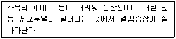
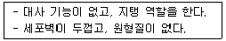
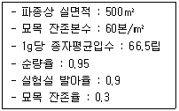
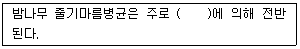
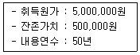
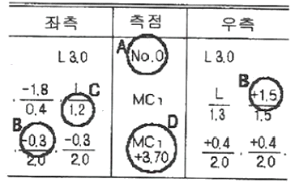
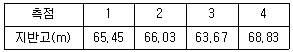
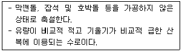

산림기사 (2021-03-07 기출문제)
1과목: 조림학
1. 산림작업에서 결실량이 많은 해에 일부 임목을 벌채하여 하종을 돕는 과정은?
- 택벌
- 후벌
- 예비벌
- 하종벌
(정답률: 82%)

2. 가지치기 작업에 대한 설명으로 옳은 것은?
- 대체로 5월경이 작업 적기이다.
- 원칙적으로 역지 이하를 잘라주어야 한다.
- 가지 기부에 존재하는 지융부도 잘라주어야 한다.
- 가지치기 작업한 나무 아래쪽의 상구는 위쪽 상구보다 유합이 빠르다.
(정답률: 77%)
3. 수관의 모양과 줄기의 결점을 고려하여 우세목을 1급목과 2급목, 열세목을 3, 4, 5급목으로 구분하는 수형급은?
- 덴마크
- KRAFT
- 데라사키
- HAWLEY
(정답률: 72%)
4. 강원도 지역에서 수하식재 방법을 이용하여 조림을 실시하고자 할 때 가장 적합한 수종은?
- Larix kaempferi
- Pinus densiflora
- Abies holophlla
- Betula platyphylla
(정답률: 58%)
5. 다음 설명에 해당하는 무기양료로만 나열된 것은?

- 칼슘, 철, 붕소
- 질소, 칼슘, 칼륨
- 철, 망간, 마그네슘
- 구리, 마그네슘, 질소
(정답률: 69%)
6. 산림작업종을 분류하는 기준으로 가장 거리가 먼 것은?
- 벌채종
- 임분의 기원
- 갱신 임분의 수종
- 벌구의 크기와 형태
(정답률: 45%)
7. 다음 중 삽목 발근이 가장 용이한 수종은?
- Salix koreensis
- Acer palmatunm
- Zelkova serrata
- Pinus koraiensis
(정답률: 51%)
8. 종자의 활력 시험 중 종자 내 산화 효소가 살아있는지의 여부를 시약의 발색반응으로 검사하는 방법은?
- 절단법
- 환원법
- X선분석법
- 배추출시험법
(정답률: 81%)
9. 덩굴제거 시 사용되는 디캄바 액제에 대한 설명으로 옳지 않은 것은?
- 페녹시계 계통이다.
- 호르몬형 이행성 제초제이다.
- 약효가 높아지는 30℃이상 고온 조건에서 사용한다.
- 주로 콩과 식물에 해당하는 광엽 잡초에 효과적이다.
(정답률: 66%)
10. 모수작업에 대한 설명으로 옳은 것은?
- 모수는 ha당 100본 이상이어야 한다.
- 전 임목 본수에서 10% 정도로 모수를 남긴다.
- 모수는 소나무, 곰솔 등 양수 수종이 적합하다.
- 작업 대상 임지의 토양 침식과 유실이 발생하지 않는다.
(정답률: 73%)
11. 다음 설명에 해당하는 목본 식물의 조직은?

- 유조직
- 후막조직
- 후각조직
- 분비조직
(정답률: 67%)
12. 밤나무, 상수리나무, 굴참나무 종자를 저장하는 방법으로 가장 적합한 것은?
- 기건저장법
- 보호저장법
- 밀봉냉장법
- 노천매장법
(정답률: 65%)
13. 난대림 자생 수종이 아닌 것은?
- 동백나무
- 가시나무
- 후박나무
- 박달나무
(정답률: 49%)
14. 지질의 종류 가운데 수목의 2차 대사 물질인 이소프레노이드(isoprenoid) 화합물이 아닌 것은?
- 고무
- 수지
- 테르펜
- 리그닌
(정답률: 65%)
15. 원생림이 파괴된 뒤에 회복된 산림은?
- 1차림
- 2차림
- 원시림
- 극상림
(정답률: 72%)
16. 100~110℃로 가열해도 분리되지 않는 토양수분은?
- 결합수
- 중력수
- 흡습수
- 모세관수
(정답률: 76%)
17. 다음 조건에 따른 파종량은?

- 약 1.8kg
- 약 3.5kg
- 약 17.6kg
- 약 35.2kg
(정답률: 43%)
18. 다음 중 측백나무과 및 낙우송과 수목의 개화-결실 촉진에 가장 효과적인 식물호르몬은?
- GA3
- IAA
- NAA
- 2,4-D
(정답률: 73%)
19. 묘목을 식재할 때 밀도가 높은 경우에 대한 설명으로 옳은 것은?
- 입목의 초살도가 증가한다.
- 솎아베기 작업을 생략할 수 있다.
- 수고 생장보다는 직경 생장을 촉진한다.
- 임관이 빨리 울폐되어 표토의 침식과 건조를 방지한다.
(정답률: 70%)
20. 소나무 종자가 수분된 후 성숙되는 시기는?
- 개화 당년
- 개화 3년째 가을
- 개화 이듬해 여름
- 개화 이듬해 가을
(정답률: 79%)
2과목: 산림보호학
21. 박쥐나방을 방제하는 방법으로 옳은 것은?
- 땅속에 서식하는 유충을 굴취하여 소각한다.
- 풀깎기를 하여 유충이 가해하는 초본류를 제거한다.
- 잎에 산란한 알덩이를 수거하여 땅에 묻거나 소각한다.
- 나뭇잎을 길게 말고 형성한 고치를 채취하여 소각한다.
(정답률: 53%)
22. 매미나방을 방제하는 방법으로 옳지 않은 것은?
- Bt균이나 핵다각체바이러스를 살포한다.
- 알덩어리는 부화 전인 4월 이전에 땅에 묻거나 소각한다.
- 유충기인 4월 하순부터 5월 상순에 적용약제를 수관에 살포한다.
- 4월 중에 지표에 비닐을 피복하여 땅속에서 우화하여 올라오는 것을 방지한다.
(정답률: 50%)
23. 다음 ( )안에 가장 적합한 것은?

- 토양
- 종자
- 선충
- 바람
(정답률: 66%)
24. 해충의 약제 저항성에 대한 설명으로 옳지 않은 것은?
- 약제에 대한 도태 및 생존의 결과이다.
- 약제 저항성이 해충의 다음 세대로 유전되지는 않는다.
- 해충의 개체군 내에서는 약제 저항성의 차이가 있는 개체가 존재한다.
- 2종 이상의 살충제에 대하여 저항성이 나타날 때 저항성 유전자가 그 중 1종의 살충제에서 기인하면 교차저항성이라고 한다.
(정답률: 80%)
25. 분류학적으로 유리나방과, 명나방과, 솔나방과를 포함하는 목(目)은?
- Blattaria
- Hemiptera
- Plecoptera
- Lepidoptera
(정답률: 72%)
26. 낙엽송 가지끝마름병균이 월동하는 형태는?
- 균핵
- 자낭각
- 분생포자각
- 겨울포자퇴
(정답률: 57%)
27. 참나무 시들음병을 방제하는 방법으로 옳지 않은 것은?
- 신갈나무숲에 매개충 유인목을 설치한다.
- 병든 부분을 제거하고 소독 후 도포제를 처리한다.
- 수간 하부부터 지상 2m까지 끈끈이롤 트랩을 감아준다.
- 피해목을 벌채하고 타포린으로 덮은 후에 훈증제를 처리한다.
(정답률: 52%)
28. 다음 중 생엽의 발화 온도가 가장 높은 수종은?
- 피나무
- 뽕나무
- 밤나무
- 아까시나무
(정답률: 49%)
29. 균사에 격벽이 없는 병원균은?
- Fusarium spp.
- Rhizoctonia solani
- Phytophthora cartorum
- Cylindrocladium scoparium
(정답률: 56%)
30. 상렬에 대한 설명으로 옳지 않은 것은?
- 서리로 인해 발생하는 수목 피해이다.
- 고립목이나 임연부에서 발견되기 쉽다.
- 상렬을 예방하기 위해서 배수를 원활하게 한다.
- 추운 지방에서 치수가 아닌 주로 교목의 수간에 발생한다.
(정답률: 54%)
31. 아밀라리아뿌리썩음병을 방제하는 방법으로 옳지 않은 것은?
- 묘목은 식재 전에 메타락실 수화제에 침지 처리한다.
- 잣나무 조림지에서 석회를 처리하여 산성토양을 개량한다.
- 감염목의 주위에 도랑을 파서 균사가 퍼지지 않도록 한다.
- 과수원에서는 감염목을 자른 다음 그루터기를 제거한다.
(정답률: 40%)
32. 흰가루병을 방제하는 방법으로 옳지 않은 것은?
- 짚으로 토양을 피복하여 빗물에 흙이 튀지 않게 한다.
- 자낭과가 붙어서 월동한 어린 가지를 이른 봄에 제거한다.
- 묘포에서는 밀식을 피하고 예방 위주의 약제를 처리한다.
- 그늘에 식재한 나무에서 피해가 심하므로 식재 위치를 잘 선정한다.
(정답률: 54%)
33. 산림곤충 표본조사법 중 곤충의 음성 주지성을 이용한 방법은?
- 미끼트랩
- 수반트랩
- 페로몬트랩
- 말레이즈트랩
(정답률: 67%)
34. 솔잎혹파리에 대한 설명으로 옳지 않은 것은?
- 침엽기부에 혹을 만들고 피해를 준다.
- 성충은 5월 하순과 8월 중순 2회 발생한다.
- 유충 형태로 토양, 지피물 밑, 벌레혹에서 월동한다.
- 교미 후에 수컷은 수 시간 내에 죽고, 암컷은 산란을 위해 1~2일 더 생존한다.
(정답률: 64%)
35. 소나무류 피목가지마름병을 방제하는 방법으로 가장 효과적인 것은?
- 병든 잎을 태우거나 묻어서 1차 전염원을 줄인다.
- 침투 이행성 살균제를 피해목 수간에 주입한다.
- 상습발생지에서는 6월부터 살균제를 토양 관주한다.
- 남향으로 뿌리가 노출된 수목의 임지에서는 관목을 무육하여 토양 건조를 방지한다.
(정답률: 42%)
36. 유충과 성충이 수목의 동일한 부분을 가해하는 해충은?
- 솔나방
- 어스렝이나방
- 오리나무잎벌레
- 잣나무넓적잎벌
(정답률: 70%)
37. 1년에 1회 발생하며 단성생식을 하는 해충은?
- 밤나무혹벌
- 넓적다리잎벌
- 노랑애나무좀
- 오리나무잎벌레
(정답률: 75%)
38. 광릉긴나무좀을 방제하는 방법으로 가장 효과가 미비한 것은?
- 내충성 품종을 식재한다.
- 딱따구리 등 천적이 되는 조류를 보호한다.
- 우화 최성기에 수간에 페니트로티온 유제를 살포한다.
- 피해목을 잘라 집재하고 타포린으로 밀봉하여 메탐소듐 액제로 훈증한다.
(정답률: 44%)
39. 산성비가 토양 및 수목에 미치는 영향으로 옳지 않은 것은? (문제 오류로 실제 시험에서는 모두 정답처리 되었습니다. 여기서는 1번을 누르면 정답 처리 됩니다.)
- 염기의 양 감소
- 질소의 이용량 감소
- 낙엽층의 축적량 감소
- 알루미늄, 망간 활성화
(정답률: 76%)
40. 다음 중 중간기주가 없는 수목병은?
- 소나무 혹병
- 향나무 녹병
- 회화나무 녹병
- 잣나무 털녹병
(정답률: 55%)
3과목: 임업경영학
41. 임령에 따른 연년생장량과 평균생장량의 관계에 대한 설명으로 옳지 않은 것은?
- 처음에는 연년생장량이 평균생장량보다 크다.
- 평균생장량의 극대점에서 두 생장량의 크기는 다르다.
- 연년생장량은 평균생장량보다 빨리 극대점을 가진다.
- 평균생장량이 극대점에 이르기까지는 연년생장량이 항상 평균생장량보다 크다.
(정답률: 70%)
42. 임지기망가의 최대값에 영향을 주는 인자에 대한 설명으로 옳지 않은 것은?
- 이율이 낮을수록 최대값이 빨리 온다.
- 간벌 수익이 클수록 최대값이 빨리 온다.
- 주벌 수익의 증대속도가 빨리 감퇴할수록 최대값이 빨리 온다.
- 관리비는 임지기망가가 최대로 되는 시기와는 관계가 없다.
(정답률: 56%)
43. 산림생장 및 예측모델을 구축하는데 있어서 제일 먼저 수행해야 할 과정은?
- 자료수집
- 모델구성
- 모델선정 및 설계
- 자료 분석 및 생장 함수식 유도
(정답률: 56%)
44. 이자를 계산인자로 포함하는 벌기령은?
- 공예적 벌기령
- 재적수확 최대 벌기령
- 화폐수익 최대 벌기령
- 토지순수익 최대 벌기령
(정답률: 46%)
45. 벌채실행을 모두베기로 할 때 벌채면적은 최대 30ha이내로 하되, 벌채면적이 5ha 이상일 경우에는 하나의 벌채 구역을 몇 ha 이내로 하는가?
- 3ha
- 5ha
- 6ha
- 10ha
(정답률: 40%)
46. 산림평가 시 임업이율은 보통이율보다 낮아야 하는 이유로 옳지 않은 것은?
- 생산기간의 장기성 때문
- 산림소유의 불안정성 때문
- 산림의 관리경영이 간편하기 때문
- 재적 및 금원 수확의 증가와 산림재산 가치의 등귀 때문
(정답률: 61%)
47. 30년생 임목이 7본, 25년생 임목이 12본, 20년생 임목이 7본인 경우 본수령으로 계산한 평균임령은?
- 15년
- 20년
- 25년
- 30년
(정답률: 72%)
48. 임업자산의 유형과 구성요소의 연결로 옳지 않은 것은?
- 유동자산 - 비료
- 유동자산 - 현금
- 고정자산 - 묘목
- 임목자산 – 산림축적
(정답률: 74%)
49. 산림경영의 지도원칙 중 보속성의 원칙에 해당되지 않는 것은?
- 합자연성
- 목재수확 균등
- 생산자본 유지
- 화폐수확 균등
(정답률: 58%)
50. 손익분기점의 분석을 위한 가정에 대한 설명으로 옳지 않은 것은?
- 제품 한 단위당 변동비는 항상 일정하다.
- 총비용은 고정비와 변동비로 구분할 수 있다.
- 제품의 판매가격은 판매량이 변동하여도 변화되지 않는다.
- 생산량과 판매량은 항상 다르며 생산과 판매에 보완성이 있다.
(정답률: 60%)
51. 임업투자 결정 중 현금유입을 통하여 투자금액을 회수하는데 소요되는 기간을 가지고 투자 결정을 하는 방법은?
- 회수기간법
- 내부수익률법
- 순현재가치법
- 수익·비용비법
(정답률: 70%)
52. 법정림(개벌작업)에서 작업급의 윤벌기가 50년인 경우의 법정수확률은?
- 2%
- 3%
- 4%
- 5%
(정답률: 63%)
53. 수간석해를 위한 원판 채취방법에 대한 설명으로 옳지 않은 것은?
- 원판의 두께는 10cm가 되도록 한다.
- 원판을 채취할 때는 수간과 직교하도록 한다.
- 측정하지 않을 단면에는 원판의 번호와 위치를 표시하여 둔다.
- Huber식에 의한 방법에서 흉고이상은 2m마다 원판을 채취하고 최후의 것은 1m가 되도록 한다.
(정답률: 65%)
54. 트레킹길 중 산줄기나 산자락을 따라 길게 조성하여 시점과 종점이 연결되지 않는 길은?
- 둘레길
- 탐방로
- 트레일
- 산림레포츠길
(정답률: 58%)
55. 산림경영의 대상이 되는 경영계획구에 대해서 산림소유자나 지방자치단체장이 수립하는 계획은?
- 지역산림계획
- 산림기본계획
- 산림경영계획
- 국유림경영계획
(정답률: 62%)
56. 임목평가의 방법 중에서 유령림의 평가에 가장 적합한 것은?
- Glaser법
- 시장가역산법
- 임목기망가법
- 임목비용가법
(정답률: 67%)
57. 다음 조건에 따라 정액법으로 구한 임업기계의 감가상각비는?

- 90,000원/년
- 100,000원/년
- 500,000원/년
- 1,100,000원/년
(정답률: 73%)
58. 임목재적을 측정하기 위한 흉고형수에 대한 설명으로 옳지 않은 것은?
- 지위가 양호할수록 형수가 작다.
- 수고가 작을수록 형수는 작아진다.
- 연령이 많아질수록 형수는 커진다.
- 흉고직경이 작아질수록 형수는 커진다.
(정답률: 56%)
59. 이율은 5%이고 앞으로 10년 후에 300,000원의 간벌수익을 얻으리라고 예상하면 간벌수입의 전가합계는?
- 약 69,000원
- 약 184,000원
- 약 489,000원
- 약 1,296,000원
(정답률: 44%)
60. 자연휴양림을 조성 신청하려는 자가 제출하여야 하는 자연휴양림 구역도의 축척은?
- 1/5,000
- 1/10,000
- 1/15,000
- 1/25,000
(정답률: 46%)
4과목: 임도공학
61. 가선집재와 비교한 트렉터에 의한 집재작업의 장점으로 옳지 않은 것은?
- 기동성이 높다.
- 작업이 단순하다.
- 작업생산성이 높다.
- 잔존임분에 대한 피해가 적다.
(정답률: 76%)
62. 다음 표는 임도의 횡단측량 야장이다. A, B, C, D에 대한 설명으로 옳지 않은 것은?

- A : 측점이 No.0인 경우는 기설노면을 의미한다.
- B : 분자는 고저차로서 +는 성토량, -는 절토량을 의미한다.
- C : 분모는 수평거리로서 측점을 기준으로 왼편 1.2m 지점을 의미한다.
- D : MC1지점으로부터 3.70m 전진한 지점을 뜻한다.
(정답률: 67%)
63. 컴퍼스측량에 대한 설명으로 옳지 않은 것은?
- 국지인력의 영향 때문에 철제구조물과 전류가 많은 시가지 측량에 적합하다.
- 캠퍼스의 눈금판은 일반적으로 N과 S점에서 양측으로 0°~90°까지 나누어져 있다.
- 시준선이 어떤 방향으로 향할 때 자침이 가리키는 값은 남북방향을 기준으로 한 각이 된다.
- 농지, 임야지 등과 같은 국지인력의 영향이 없는 곳이나 높은 정도를 필요로 하지 않는 곳에서 작업이 신속하고 간편하기에 많이 이용된다.
(정답률: 60%)
64. 1/5000 지형도에 종단경사 10%의 임도노선을 도상배치하고자 한다. 이론적인 수치보다 10%의 할증을 더 두어 계산해야 한다면 양각기 폭은? (단, 한 등고선의 간격은 5m)
- 1.0mm
- 1.1mm
- 10mm
- 11mm
(정답률: 36%)
65. 콘크리트 포장 시공에서 보조기층의 기능으로 옳지 않은 것은?
- 동상의 영향을 최소화한다.
- 노상의 지지력을 증대시킨다.
- 노상이나 차단층의 손상을 방지한다.
- 줄눈, 균열, 슬래브 단부에서 펌핑현상을 증대시킨다.
(정답률: 69%)
66. 임도 설계를 위한 중심선측량 시 측점 간격 기준은?
- 10m
- 15m
- 20m
- 25m
(정답률: 59%)
67. 합성기울기가 10%이고, 외쪽기울기가 6%인 임도의 종단기울기는?
- 4%
- 6%
- 8%
- 10%
(정답률: 69%)
68. 배향곡선지가 아닌 경우 임도의 유효너비 기준은?
- 3m
- 4m
- 5m
- 6m
(정답률: 62%)
69. 산림 토목공사용 기계로 옳지 않은 것은?
- 전압기
- 착암기
- 식혈기
- 정지기
(정답률: 66%)
70. 사리도(자갈길, gravel road)의 유지관리에 대한 설명으로 옳지 않은 것은?
- 방진처리에 염화칼슘은 사용하지 않는다.
- 노면의 제초나 예불은 1년에 한 번 이상 실시한다.
- 비가 온 후 습윤한 상태에서 노면 정지작업을 실시한다.
- 횡단배수구의 기울기는 5~6% 정도를 유지하도록 한다.
(정답률: 58%)
71. 임도 노면 시공방법에 따른 분류로 매캐덤(Macadam)에 해당하는 것은?
- 사리도
- 쇄석도
- 토사도
- 통나무길
(정답률: 70%)
72. 임도시공 시 토질조사 작업에서 예비조사의 주요항목이 아닌 것은?
- 토양
- 지질
- 기상
- 지적
(정답률: 41%)
73. 임도 설계업무의 진행 순서로 옳은 것은?
- 예비조사→예측→답사→실측→설계도작성
- 예비조사→답사→예측→실측→설계도작성
- 실측→예측→지형도분석→답사→설계도작성
- 실측→지형도분석→예측→구조물조사→설계도작성
(정답률: 70%)
74. 다음 종단측량 결과표를 이용하여 측점 1~4를 연결하는 도로계획선의 종단기울기는? (단, 중심말뚝 간격은 30m)

- 약 –3.8%
- 약 +3.8%
- 약 –5.6%
- 약 +5.6%
(정답률: 54%)
75. 임도 시설기준에 대한 설명으로 옳은 것은?
- 배향곡선은 중심선 반지름이 10m 이상으로 한다.
- 종단곡선은 포물선곡선방식을 적용하지 않는다.
- 특수지형에서 최소곡선반지름은 설계속도와 관계없이 14m 이상으로 한다.
- 특수지형에서 노면포장을 하는 경우 종단기울기는 20% 범위에서 조정할 수 있다.
(정답률: 36%)
76. 적정임도밀도가 10m/ha이고 양방향으로 집재할 때 평균집재거리는?
- 250m
- 500m
- 750m
- 1000m
(정답률: 48%)
77. 일반지형의 경우 임도 설계속도가 20km/시간일 때 설치할 수 있는 최소곡선반지름 기준은?
- 12m
- 15m
- 20m
- 30m
(정답률: 53%)
78. 반출할 목재의 길이가 20m인 전간재를 너비가 4m인 임도에서 트럭으로 운반할 때 최소곡선 반지름은?
- 4m
- 20m
- 25m
- 50m
(정답률: 57%)
79. 임도망 배치의 효율성 정도를 나타내는 개발지수에 대한 설명으로 옳지 않은 것은?
- 평균집재거리와 임도밀도를 곱하여 계산한다.
- 균일하게 임도가 배치되었을 때의 값은 1.0이다.
- 노선이 중첩되면 될수록 임도배치 효율성은 높아진다.
- 임도간격과 밀도가 동일하더라도 노망의 배치상태에 따라 이용효율성은 크게 달라진다.
(정답률: 64%)
80. 흙의 입도분포의 좋고 나쁨을 나타내는 균등계수의 산출식으로 옳은 것은? (단, 통과중량백분율 X에 대응하는 입경은 DX)
- D10 ÷ D60
- D20 ÷ D60
- D60 ÷ D20
- D60 ÷ D10
(정답률: 65%)
5과목: 사방공학
81. 붕괴형 산사태에 대한 설명으로 옳은 것은?
- 지하수로 인해 발생하는 경우가 많다.
- 파쇄 또는 온천 지대에서 많이 발생한다.
- 속도는 완만해서 흙덩이는 흩어지지 않고 원형을 유지한다.
- 이동 면적이 1ha 이하로 작고, 깊이도 수 m 이하로 얕은 경우가 많다.
(정답률: 55%)
82. 유역면적 200ha, 최대시우량 180mm/h, 유거계수 0.6일 때 최대홍수유량(m3/s)은?
- 60
- 90
- 120
- 180
(정답률: 60%)
83. 비탈다듬기 공법에 대한 설명으로 옳지 않은 것은?
- 붕괴면의 주변 상부는 충분히 끊어낸다.
- 기울기가 급한 장소에서는 선떼붙이기와 산비탈돌쌓기 등으로 조정한다.
- 퇴적층 두께가 3m 이상일 때에는 땅속흙막이를 시공한 후 실시한다.
- 수정기울기는 지질·면적·공법 등에 따라 차이를 두되 대체로 45° 전후로 한다.
(정답률: 46%)
84. 비탈면 붕괴를 방지하기 위한 돌망태쌓기 공법에 대한 설명으로 옳지 않은 것은?
- 보강성 및 유연성이 좋다.
- 투수성 및 방음성이 불량하다.
- 일체성과 연속성을 지닌 구조물이다.
- 주로 철선으로 짠 망태에 호박돌 또는 잡석을 채워 사용한다.
(정답률: 67%)
85. 강우 시 침투능에 대한 설명으로 옳지 않은 것은?
- 나지보다 경작지의 침투능이 더 크다.
- 초지보다 산림지의 침투능이 더 크다.
- 침엽수림이 활엽수림보다 침투능이 더 크다.
- 시간이 지속되면 점점 작아지다가 일정한 값이 된다.
(정답률: 60%)
86. 콘크리트흙막이를 산복기초로 시공할 경우 가장 적합한 높이는?
- 2.5m 이하
- 3.0m 이하
- 3.5m 이하
- 4.0m 이하
(정답률: 40%)
87. 황폐 계류 유역을 구분하는데 포함되지 않는 것은?
- 토사준설구역
- 토사생산구역
- 토사퇴적구역
- 토사유과구역
(정답률: 69%)
88. 다음 설명에 해당하는 것은?

- 떼붙임 수로
- 메붙임 돌수로
- 찰붙임 돌수로
- 콘크리트 수로
(정답률: 51%)
89. 기슭막이에 대한 설명으로 옳지 않은 것은?
- 기슭막이의 둑마루 두께는 0.3~0.5m를 표준으로 한다.
- 기슭막이의 높이는 계획고 수위보다 0.5~0.7m 높게 한다.
- 유로의 만곡에 의해 물의 충격을 받는 수충부 하류에 계획한다.
- 기초의 밑넣기 깊이는 계상의 상황 등을 고려하여 세굴되지 않도록 한다.
(정답률: 49%)
90. 설상사구에 대한 설명으로 옳은 것은?
- 주로 파도막이 뒤에 형성되는 모래 언덕이다.
- 모래가 정선부에 퇴적하여 얕은 모래 둑을 형성한다.
- 혀 모양의 형태로 모래가 쌓인 후 반달 모양으로 형태가 바뀐 것이다.
- 치올린 언덕의 모래가 비산하여 내륙으로 이동하면서 수목이나 사초가 있을 때 형성된다.
(정답률: 51%)
91. 비중에 따라 골재를 구분할 경우 중량골재의 비중 기준은?
- 2.50 이하
- 2.60 이상
- 2.70 이상
- 2.80 이상
(정답률: 53%)
92. 콘크리트 치기 작업의 주의사항으로 옳지 않은 것은?
- 가급적 신속하게 콘크리트 치기를 실시하여 작업을 완료해야 한다.
- 일반적으로 1.5m 이상의 높이에서 콘크리트를 떨어뜨려서는 안 된다.
- 거푸집 내면의 막음널에 이탈제로 광유를 바르거나 비눗물을 바르기도 한다.
- 기둥, 교각, 벽 등에는 콘크리트를 쳐 올라감에 따라 뜬 물이 생기므로 묽은 반죽으로 하는 것이 좋다.
(정답률: 68%)
93. 흙사방댐의 높이가 2.5m일 때에 가장 적합한 댐마루 나비는? (단, Merrimar식 이용)
- 2.0m
- 2.25m
- 2.5m
- 2.75m
(정답률: 41%)
94. 토양침식 형태에서 중력침식에 해당되지 않는 것은?
- 붕괴형
- 지중형
- 지활형
- 유동형
(정답률: 58%)
95. 사방댐을 직선유로에 계획할 때 올바른 방향은?
- 유심선에 직각
- 유심선에 평행
- 유심선에 접선에 직각
- 유심선의 접선에 평행
(정답률: 63%)
96. 돌골막이 시공 시 돌쌓기의 표준 기울기로 옳은 것은?
- 1 : 0.1
- 1 : 0.2
- 1 : 0.3
- 1 : 0.4
(정답률: 68%)
97. 비탈면 녹화공법에 해당하지 않는 것은?
- 조공
- 사초심기
- 비탈덮기
- 선떼붙이기
(정답률: 67%)
98. 임간나지에 대한 설명으로 옳은 것은?
- 산림이 회복되어 가는 임상이다.
- 비교적 키가 작은 울창한 숲이다.
- 초기황폐지나 황폐이행지로 될 위험성은 없다.
- 지표면에 지피식물 상태가 불량하고 누구 또는 구곡침식이 형성되어 있다.
(정답률: 71%)
99. 시우량법을 이용하여 최대홍수유량을 산정할 때 침투 정도가 보통인 평지 토양에서 유거계수가 가장 큰 경우는?
- 산림
- 초지
- 암석지
- 농경지
(정답률: 61%)
100. 계류의 임계유속에 대한 설명으로 옳은 것은?
- 유수가 흐르지 않는 상태이다.
- 계상에 침식이 일어나지 않는다.
- 계상에 침식이 가장 많이 일어난다.
- 유수의 속도가 가장 빠른 상태이다.
(정답률: 61%)